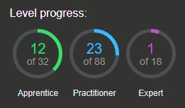

Continuining the Burp labs
Posted on May 10, 2020
Back to my day job this week, but I've still been able to make decent progress:

I've decided to take on the idea of creating a repo with the solutions for the labs I go through. I noticed that the solutions provided by the labs do not always explain everything involved in the exploit, so I've been mainly focusing on providing those extra details or key pieces of information that make the attack run.
They can all be found on my github page:
Burp Lab Solutions
I spent this week focusing on XSS attacks, as these tend to be most frequent and observable in real life scenarios. Of particular interest were the DOM labs and the use of Burp Collaborator. Essentially, Burp Collaborator is a personal web server you can spin up to help discover and test various vulnerabilities. It's very powerful. More here:
https://portswigger.net/burp/documentation/collaborator
What are my current goals?
My first goal is to progress as much as I can through the labs, as I believe the skills will be essential for my current job and they're a lot of fun.
My second goal with these labs is to build momentum and keep the ball rolling. Once I'm done with them I'll get back to HTB and other side projects, but I think the labs take priority for now.